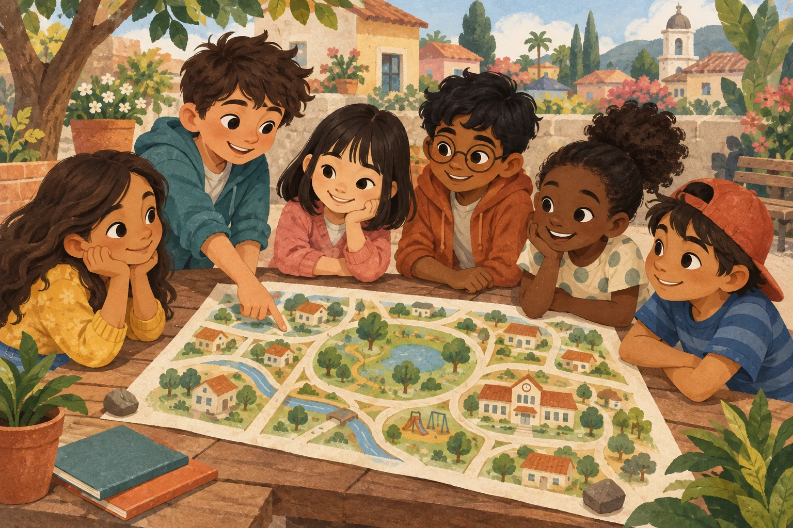

Many cultures
We learn that cultures and traditions can be different.
A1 ENGLISH IDENTITY & TERRITORY
Learning English through identity and traditions. Discover your community, share what makes you unique, and learn from one another.
Explore the modulesAprende inglés desde tu identidad y tus tradiciones.

01 / THE UNIT
This unit helps A1 students learn basic English while exploring their community, cultural identity, and local traditions. Students will learn to describe their community, share traditions, and learn about other cultures.
The unit promotes inclusion, respect, participation, and intercultural understanding.
By the end of the unit, you will be able to:
02 / YOUR LEARNING JOURNEY
Elige un módulo. Toca una palabra
para descubrir su significado.
03 / LEARN BY DOING
Speak, draw, write, or use visual materials.
Choose how you want to participate.
Los botones abren los recursos originales del PDF en otra pestaña. Algunos pueden requerir acceso del docente o una sesión activa.
04 / EVERY VOICE BELONGS
We learn that cultures and traditions can be different.
We welcome different family structures and experiences.
We include both rural and urban communities.
We respect our first languages and cultural backgrounds.
We explore differences respectfully, without generalizations.
We listen to and value our classmates' experiences.
05 / PUT IT ALL TOGETHER
Present your community or a local tradition. Use basic English and celebrate what you have learned.
Open the final taskWayground · Código del PDF: 49434213.
Si la sesión terminó, solicita un nuevo código al docente.
| Criteria | What will be assessed? |
|---|---|
| English | Use of basic vocabulary and sentences |
| Culture | Understanding of cultural differences |
| Respect | Respect for different perspectives |
| Participation | Active participation in activities |
| Final product | Community/tradition presentation |
TAKE THIS WITH YOU
“Learning a language also means
learning about people and cultures.”
This unit connects English learning with students' cultural identities and communities. Students learn basic English while sharing their traditions and discovering other cultures. The activities encourage participation, respect, inclusion, and intercultural communication.
06 / ACADEMIC SOURCES
Referencias bibliográficas reproducidas del documento base.
Based on My Community, My Culture: Learning English through identity and traditions, supplied as “Black Brown Illustrative Class Project Presentation.pdf” (15 slides; author and date not indicated).
Los módulos, objetivos, actividades, evaluación y referencias proceden del PDF. Las traducciones de vocabulario y la tarjeta de práctica son apoyos añadidos para la versión web. Las referencias se conservaron como aparecen en el original, sin agregar datos bibliográficos no verificados.
La ilustración principal fue generada con IA para esta adaptación. Representa personajes ficticios de distintas nacionalidades; su apariencia no determina su nacionalidad.